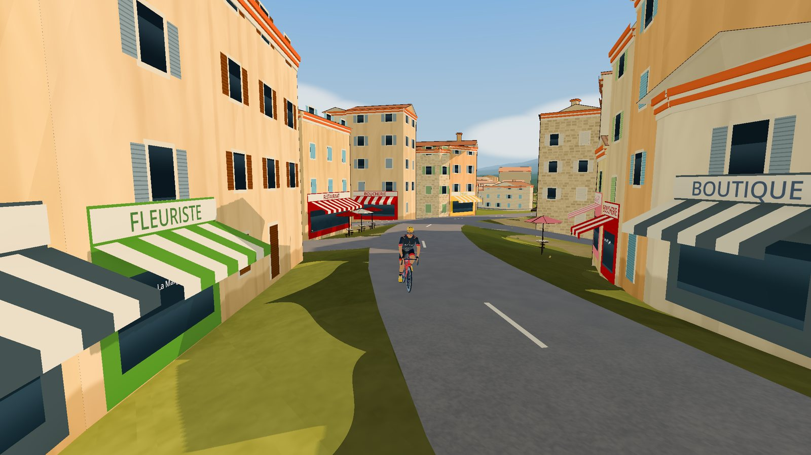
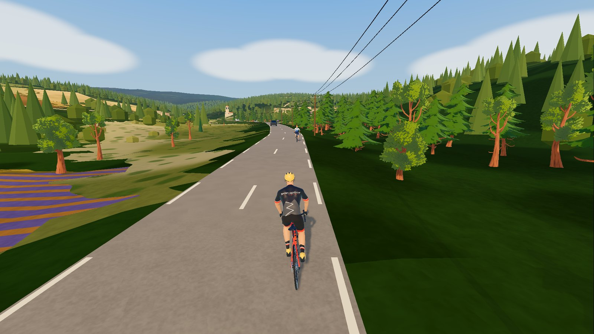
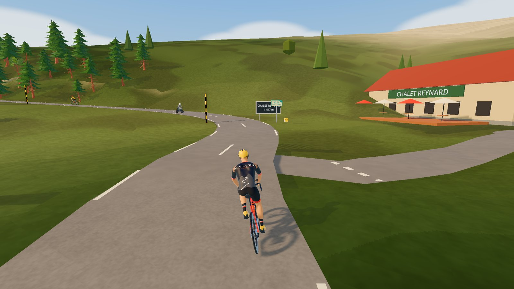
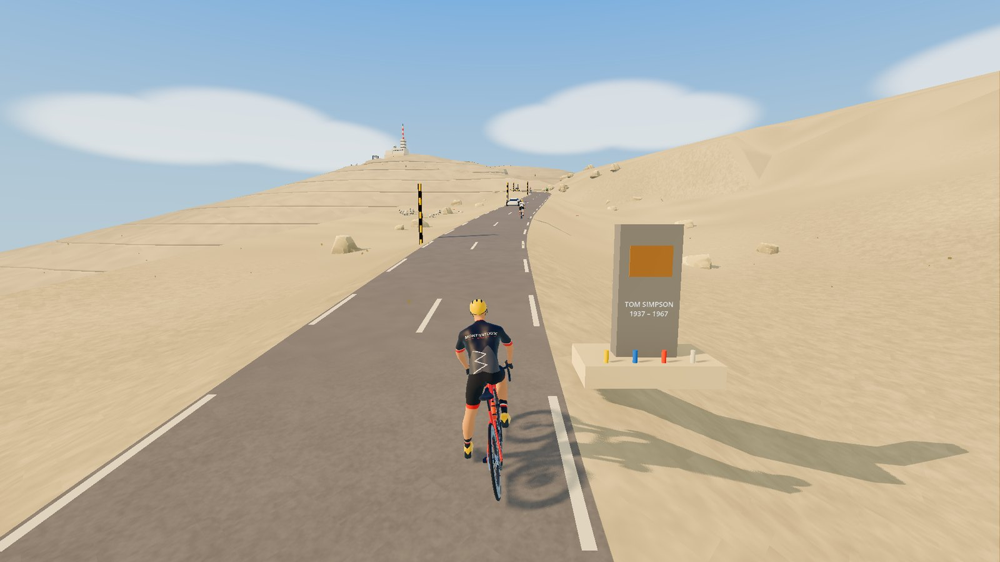
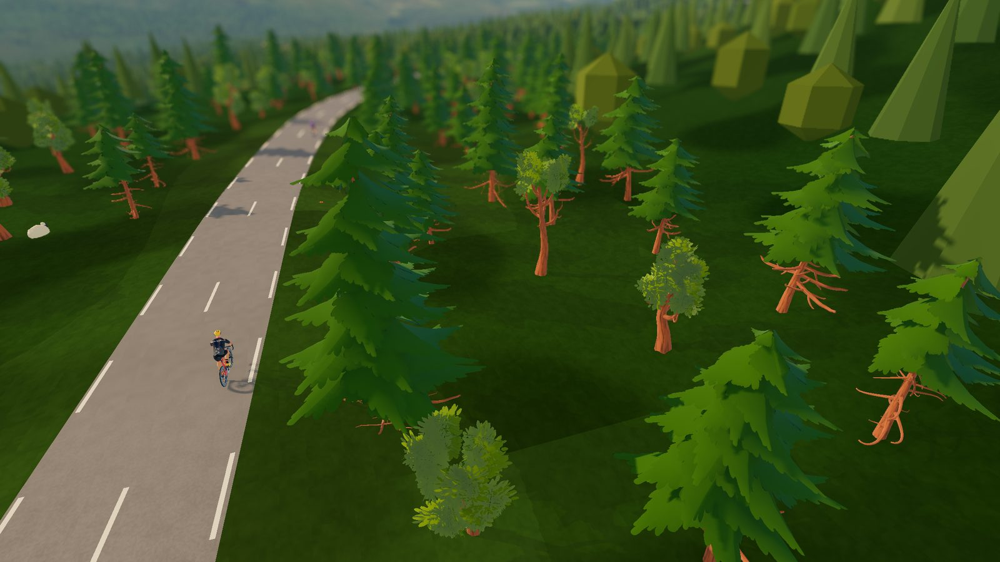

La plus douce, la plus longue, la plus parfumée. Des champs de lavande du plateau d'Albion jusqu'au pierrier, à un rythme régulier… avant six derniers kilomètres qui ne pardonnent pas.
Chaque barre est un kilomètre, colorée comme les bornes blanches et jaunes du bord de route : vert sous 3 %, jaune, orange, rouge, puis bordeaux au-delà de 10 %.

On quitte le village perché par la route du Ventoux, entre champs de lavande et d'épeautre. Après une courte descente, la montée commence à 4 ou 5 %, régulière comme un métronome.

Une longue traversée en forêt, à l'ombre des pins, sans jamais dépasser 6 % : idéal pour une séance au seuil ou un plan d'entraînement.

Au Chalet Reynard, la route de Sault rejoint celle de Bédoin. Le décor change d'un coup : plus un arbre, le pierrier blanc et le sommet droit devant.

Entre 7 et 9 % jusqu'au bout, devant la stèle de Tom Simpson et le col des Tempêtes, jusqu'à l'observatoire et ses spectateurs.


La voie royale. Celle du Tour de France, de la forêt sans répit et du désert de pierres blanches. 21 kilomètres pour passer des vignes à 1 912 mètres.

La face nord. Plus irrégulière, plus sauvage, avec les rampes les plus raides du Géant et la station du Mont Serein à mi-chemin du ciel.
 Mont Ventoux Online
Mont Ventoux Online